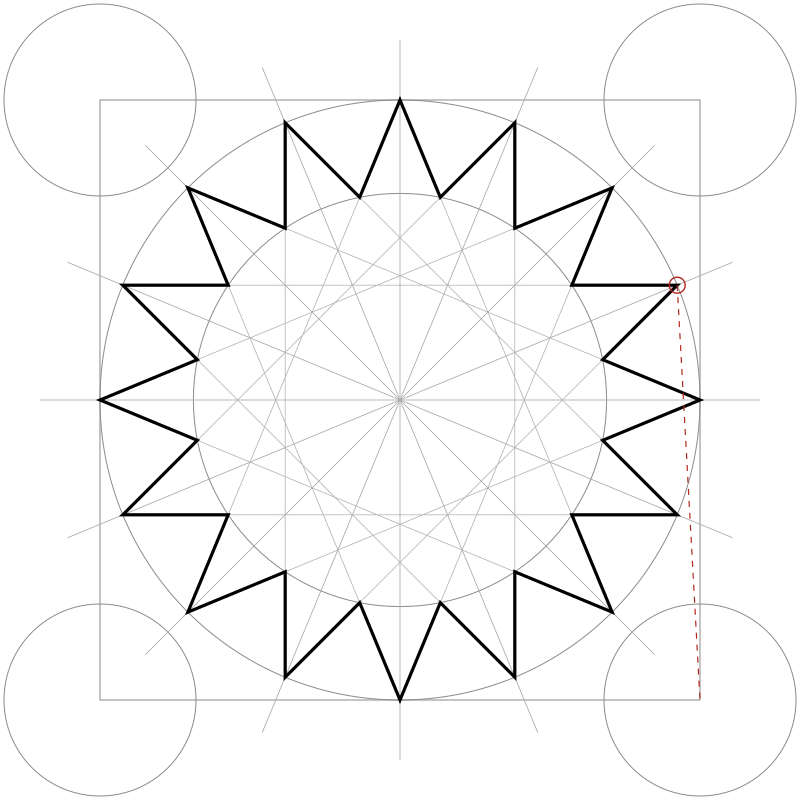

MoroccoCraftsZelligeGeometry
The Geometry Inside a Zellige Star
One circle, sixteen divisions, a few exact lines. How a craft turns mathematics into a wall.

Every zellige pattern begins with tools a geometry student would recognise: a compass, a straight edge and a circle. Divide the circle into equal parts, join the points in a fixed rhythm, and a star appears. Change the number of divisions, eight, twelve, sixteen, and the whole character of the wall changes with it.
The star in this drawing joins each of sixteen points on the circle to the point six steps further along. Mathematicians write it as {16/6}. Craftsmen rarely use the notation, but they work with the same logic: a small set of rules, repeated with precision.
Then the drawing becomes material. In workshops in Fès and elsewhere, glazed clay squares are cut by hand into small pieces, each shaped with a sharpened hammer, laid face down into the design and then set in mortar.
[Next: interview with a maâlem, a master craftsman, on how a pattern is chosen and laid out.]